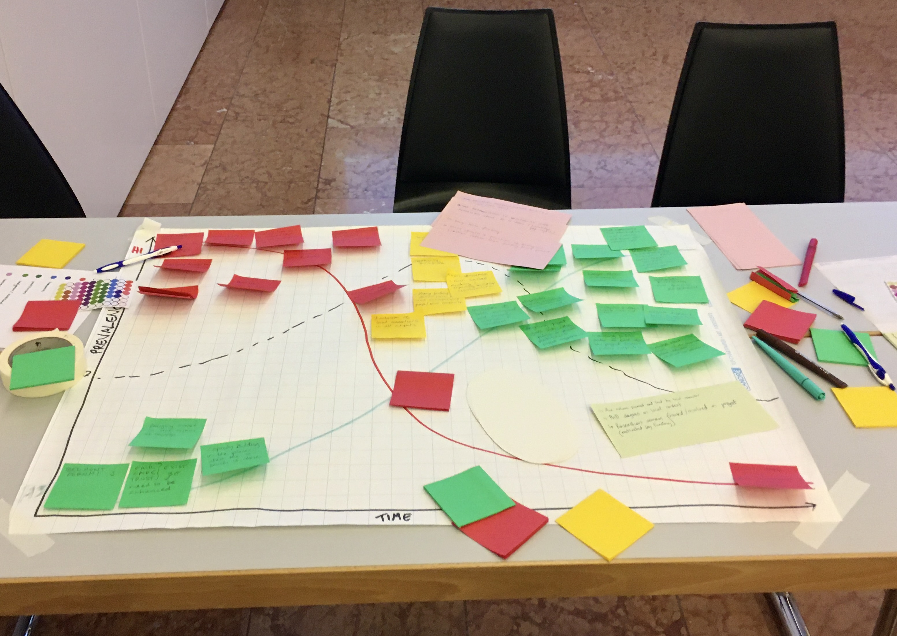

Scoping results
Ongoing analysis of scoping outcomes for Biodiversity3

Summary from scoping events (as of 2026-10-16)
We consulted 60 researchers and practitioners from 27 countries (19 from the global North, 8 from the global South) during five co-construction workshops held at major international biodiversity conferences.
Participants collectively recognised the merits and core components of the concept note ; 65% recognised that biodiversity monitoring is not adequately funded and 90% estimated that adding a transdisciplinary dimension to biodiversity monitoring is important and a priority.
“Transdisciplinarity captures the intangible parts of biodiversity (spiritual, cultural, social)”
The scoping has identified three key knowledge gaps (systemic fragmentation in monitoring, disciplinary silos, and data deficiencies for specific biological systems like soil health) and major roadblocks (lack of standardization, funding constraints, poor communication among stakeholders, and geographical biases in data collection).
WBF2026
Two scoping workshops were done at the WBF.
- the first was done as part of Sierra Deutsch’s training workshop for the Three Horizon and Two-Eye Seeing methods (photo above).
- the second was a more ‘classical’ scoping workshop, discussing the knowledge gaps, road blocks, societal needs, existing funding opportunities.
The full report is here.
Three Horizon Method
This method is described here. In short, it is a tool to visualize the current state of monitoring’s role in biodiversity conservation, attributes of desirable futures, and the way to get there. Below is a retranscription of what was worked on in Davos.
Data and Knowledge Gaps
Laurent’s group identified gaps in long-term programs, mechanistic understanding, and ecosystem functions, emphasizing the need to link observations to drivers of change. Eric’s group highlighted under-monitored areas: bacteria, agriculture, pollinators, soil health, and marine systems (underrepresented in GBIF), and noted mismatches between observation distributions and actual biodiversity patterns.
Societal and Policy Challenges
Trust and communication barriers dominate. Laurent’s group stressed data ownership (especially for Indigenous communities), mistrust of community-generated data, and policymakers’ demand for practical information over nature-based solutions. Eric’s group stated that stakeholders often overlook the value of genomic data (lack of understanding) and biodiversity economics, while communication lags persist among scientists, policymakers, and communities.
Research Paradigm Shifts
Eric’s group advocate shifting from top-down to bottom-up transdisciplinary approaches, integrating Traditional Ecological Knowledge (TEK) and Indigenous knowledge, and fostering feedback loops between action, communication, and education. They call for rejecting ivory tower science, including engineers and remote sensing experts, and ensuring continuous monitoring and FAIR data.
Practical Solutions
Both groups emphasize community involvement from project inception. Solutions include democratizing data collection, decentralizing knowledge production, empowering local stakeholders, planning beyond 3-year timelines, reducing funding bureaucracy, and ensuring practical, implementable use of monitoring data to bridge the science-policy gap.
IDSSD
This was a joint scoping between the Artic 3 (now Polar) CRA and Biodiversity 3.
SRI2026
SRI2026’s scoping was done in two discussion groups. The full report is here.
Knowledge gaps and data challenges
Marine systems face critical knowledge gaps, lacking continuous time series due to project-specific, disconnected data collections. Accessibility remains a major barrier, and political regime shifts disrupt data continuity, with historical records often lost. Connecting biodiversity to communities is essential for enabling sustainable resource use, addressing human-wildlife conflicts, and linking monitoring to action by better understanding societal needs and the value of healthy ecosystems.
Transdisciplinary solutions
Researchers cannot address these challenges alone; interdisciplinary teams are required to bridge the gap between science and society. Co-creation must begin at project inception, with experts like lawyers defining data needs through legal scoping. Transdisciplinarity captures intangible biodiversity dimensions—spiritual, cultural, and social values—alongside economic benefits, necessitating standardized monitoring to ensure future data usability. This approach also enables triangulation between researchers, communities, and policymakers.
Community engagement and policy
Communication barriers, including language differences and technology gaps, hinder effective collaboration and citizen science participation. Restoration management currently suffers from top-down approaches that exclude local communities. Policy action must be community-driven, as ground-level initiatives often prove more effective than policy briefs. Crucially, monitoring benefits should directly reach indigenous communities to ensure equitable and meaningful impact.
Implementation gap
Despite robust monitoring infrastructure—such as South Africa’s 22 biodiversity research chairs, six UNESCO biodiversity sites, and extensive data through NRF SAEON, policy impact remains limited. A stark example: a community replanting effort in a semi-desert faces physical threats to its leader due to competing diamond mining rights. While monitoring sites, personnel, and data exist, the disconnect between knowledge and policy action persists, requiring better integration to drive real-world change.
CBC2026
CBC2026’s scoping was done in the form of a word café. Participants were given eight questions to choose from. We voted with Wooclap and selected four. The summaries are below and the full report is here.
How can long-term biodiversity data better support action?
A data assessment framework must evaluate inventory, quality, access, governance, and creation standards, with clear definitions of “long-term” to address both immediate and century-scale needs. Institutional commitment—sustained funding, stable policies, and standardized protocols—enables data-driven conservation prioritization. Integration with climate metrics (e.g., CO₂-equivalent) supports co-benefit analyses, while linking biodiversity data to social-environmental context provides holistic, actionable insights.
How can biodiversity monitoring be genuinely transdisciplinary?
Transdisciplinary monitoring requires early co-design with citizen scientists, land users, and communities, starting with agreed indicators. Incentives and clear value communication (e.g., “Share your data to improve management”) motivate participation, while policy integration demands long-term support. Existing apps (e.g., PictureThis, ObsIdentify) show potential, but standardization, verification, and data protection are needed to address scientific skepticism and ensure quality. Design must be accessible, engaging, and scalable across contexts.
How can monitoring systems better capture change, its drivers, and action effectiveness?
The current funding system creates harmonization a nd standardization gaps and broken time series. A coordination crisis (no central registry of activities) and knowledge-action gap (research not reaching practitioners) persist. Solutions include: a global monitoring registry, leveraging existing resources, closing funding gaps, transferring evidence directly to practitioners, and establishing feedback mechanisms. Prioritizing baseline establishment and identifying best indicators are also critical.
How can BIODIVERSITY3 build lasting partnerships, capacities, and infrastructures?
Lasting impact requires co-design from project inception, building institutional memory, and defining biodiversity dimensions (taxonomic, functional, genetic). Durable data infrastructures (FAIR/CARE principles) and clear governance ensure long-term accessibility. Gap analysis should guide future investments. Partnerships with schools, public authorities, and local initiatives can institutionalize monitoring, avoiding duplication and strengthening networks.